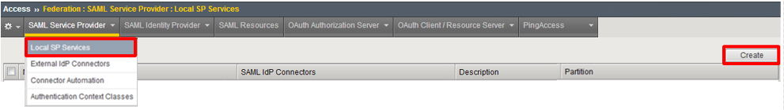

F5 Identity and Access Management Solutions > Class 1: SAML Federation with F5 Source | Edit on
Lab 1: SAML Service Provider (SP) Lab¶
The purpose of this lab is to configure and test a SAML Service Provider. Students will configure the various aspects of a SAML Service Provider, import and bind to a SAML Identity Provider and test SP‑Initiated SAML Federation.
Objective:
- Gain an understanding of SAML Service Provider(SP) configurations and its component parts
- Gain an understanding of the access flow for SP-Initiated SAML
Lab Requirements:
- All Lab requirements will be noted inƒ the tasks that follow
Estimated completion time: 25 minutes
TASK 1 ‑ Configure the SAML Service Provider (SP)¶
SP Service¶
Begin by selecting: Access -> Federation -> SAML Service Provider -> Local SP Services
Click the Create button (far right)

In the Create New SAML SP Service dialog box click General Settings in the left navigation pane and key in the following as shown:
Name: app.f5demo.comEntity ID: https://app.f5demo.comClick OK on the dialogue box
Note
The yellow box on Host will disappear when the Entity ID is entered.
IdP Connector¶
Click on Access ‑> Federation ‑> SAML Service Provider ‑> External IdP Connectors or click on the SAML Service Provider tab in the horizontal navigation menu and select External IdP Connectors
Click specifically on the Down Arrow next to the Create button (far right)
Select From Metadata from the drop down menu

In the Create New SAML IdP Connector dialogue box, click Browse and select the idp.partner.com‑app_metadata.xml file from the Desktop of your jump host.
In the Identity Provider Name field enter idp.partner.com:
Click OK on the dialog box
Note
The idp.partner.com-app_metadata.xml was created previously. Oftentimes, IdP providers will have a metadata file representing their IdP service. This can be imported to save object creation time as it has been done in this lab
Click on the Local SP Services from the SAML Service Providers tab in the horizontal navigation menu
Click the checkbox next to the previously created app.f5demo.com and click Bind/Unbind IdP Connectors at the bottom of the GUI
- In the Edit SAML IdP’s that use this SP dialogue box, click the
Add New Row button
In the added row, click the Down Arrow under SAML IdP Connectors and select the /Common/idp.partner/com SAML IdP Connector previously created
Click the Update button and the OK button at the bottom of the dialog box
Under the Access ‑> Federation ‑> SAML Service Provider ‑> Local SP Services menu you should now see the following (as shown):
Name: app.f5demo.comSAML IdP Connectors: idp.partner.com
TASK 2 ‑ Configure the SAML SP Access Policy¶
Begin by selecting Access ‑> Profiles/Policies ‑> Access Profiles (Per‑Session Policies)
Click the Create button (far right)
In the New Profile window, key in the following:
Name: app.f5demo.com‑policyProfile Type: All(from drop down)Profile Scope: Profile(default)Scroll to the bottom of the New Profile window to the Language Settings
Select English from the Factory Built‑in Languages on the right, and click the Double Arrow (<<), then click the Finished button.
From the Access ‑> Profiles/Policies ‑> Access Profiles (Per‑Session Policies) screen, click the Edit link on the previously created
app.f5demo.com‑policylineIn the Visual Policy Editor window for
/Common/app.f5demo.com‑policy, click the Plus (+) Sign between Start and DenyIn the pop‑up dialog box, select the Authentication tab and then click the Radio Button next to SAML Auth
Once selected, click the Add Item button
In the SAML Auth configuration window, select
/Common/app.f5demo.comfrom the AAA Server drop down menuClick the Save button at the bottom of the window
In the Visual Policy Editor window for
/Common/app.f5demo.com‑policy, click the Plus (+) Sign on the Successful branch following SAML AuthIn the pop-up dialog box, select the Assignment tab, and then click the Radio Button next to Variable Assign
Once selected, click the Add Item buton
In the Variable Assign configuration window, click the Add New Entry button
Under the new Assignment row, click the Change link
In the pop‑up window, configure the following:
Left Pane Variable Type: Custom VariableSecurity: UnsecureValue: session.logon.last.usernameRight Pane Variable Type: Session VariableSession Variable: session.saml.last.attr.name.emailaddressClick the Finished button at the bottom of the configuration window
Click the Save button at the bottom of the Variable Assign dialog window
In the Visual Policy Editor select the Deny ending along the fallback branch following the Variable Assign
From the Select Ending dialog box, select the Allow button and then click Save
In the Visual Policy Editor click Apply Access Policy (top left) and close the Visual Policy Editor
TASK 3 ‑ Create the SP Virtual Server & Apply the SP Access Policy¶
Begin by selecting Local Traffic -> Virtual Servers
Click the Create button (far right)
In the New Virtual Server window, key in the following as shown:
General Properties Name: app.f5demo.comDestination Address/Mask: 10.1.10.100Service Port: 443Configuration HTTP Profile: http(drop down)SSL Profile (Client) app.f5demo.com‑clientsslAccess Policy Access Profile: app.f5demo.com‑policyResources iRules: application‑iruleScroll to the bottom of the configuration window and click Finished
Note
The iRule is being added in order to simulate an application server to validate successful access.
TASK 4 ‑ Test the SAML SP¶
Using your browser from the jump host, navigate to the SAML SP you just configured at
https://app.f5demo.com(or click the provided bookmark)
Did you successfuly redirect to the IdP?
Log in to the IdP. Were you successfully authenticated?
Note
Use the credentials provided in the Authentication section at the beginning of this guide (user/Agility1)
After successful authentication, were you returned to the SAML SP?
Were you successfully authenticated to the app in the SAML SP?
Review your Active Sessions (Access ‑> Overview ‑> Active Sessions)
Review your Access Report Logs (Access ‑> Overview ‑> Access Reports)